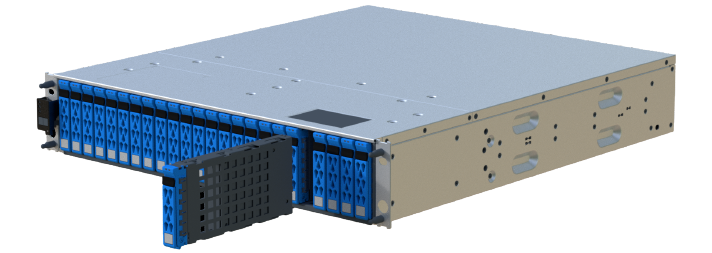

Versionshinweise
Versionshinweise
Ersetzen Sie ein Laufwerk in einem EF600 Array
 Änderungen vorschlagen
Änderungen vorschlagen
Ein Laufwerk kann in einem EF600 Array ersetzt werden.
Der Recovery Guru in SANtricity System Manager überwacht die Laufwerke im Storage Array und benachrichtigt Sie über einen bevorstehenden Laufwerksausfall oder tatsächlichen Laufwerksausfall. Wenn ein Laufwerk ausfällt, leuchtet die gelbe Warn-LED. Sie können ein ausgefallenes Laufwerk im laufenden Betrieb austauschen, während das Speicher-Array I/O-Vorgänge empfängt
-
Prüfen "Anforderungen für den Austausch von EF300- oder EF600-Laufwerken".
-
Stellen Sie sicher, dass Sie Folgendes haben:
-
Ein von NetApp unterstütztes Ersatzlaufwerk für Ihr Controller Shelf oder Festplatten-Shelf.
-
Ein ESD-Armband, oder Sie haben andere antistatische Vorsichtsmaßnahmen getroffen.
-
Eine flache, statische Arbeitsfläche.
-
Eine Management Station mit einem Browser, der für den Controller auf den SANtricity System Manager zugreifen kann. (Zeigen Sie zum Öffnen der System Manager-Schnittstelle den Domain-Namen oder die IP-Adresse des Controllers im Browser.)
-
Schritt 1: Vorbereitung auf den Austausch des Laufwerks
Bereiten Sie sich auf den Austausch eines Laufwerks vor, indem Sie den Recovery Guru in SANtricity System Manager prüfen und alle erforderlichen Schritte ausführen. Dann können Sie die ausgefallene Komponente finden.
-
Wenn der Recovery Guru im SANtricity System Manager Sie über einen bevorstehenden Laufwerksausfall informiert hat, aber es ist noch nicht ausgefallen, befolgen Sie die Anweisungen im Recovery Guru zum Fehlschlagen des Laufwerks.
-
Überprüfen Sie bei Bedarf mit SANtricity System Manager, ob Sie ein geeignetes Ersatzlaufwerk besitzen.
-
Wählen Sie Hardware.
-
Wählen Sie in der Shelf-Grafik das ausgefallene Laufwerk aus.
-
Klicken Sie auf das Laufwerk, um das Kontextmenü anzuzeigen, und wählen Sie dann Einstellungen anzeigen.
-
Vergewissern Sie sich, dass die Kapazität des Ersatzlaufwerks dem des Ersatzlaufwerks entspricht oder höher ist als das ersetzte Laufwerk und dass es die Funktionen besitzt, die Sie erwarten.
Versuchen Sie beispielsweise nicht, ein Festplattenlaufwerk (HDD) durch eine Solid-State-Festplatte (SSD) zu ersetzen. Ebenso sollte das Ersatzlaufwerk auch sicher sein, wenn Sie ein sicheres Laufwerk ersetzen.
-
-
Verwenden Sie bei Bedarf SANtricity System Manager, um das Laufwerk in Ihrem Speicher-Array zu finden: Wählen Sie im Kontextmenü des Laufwerks die Option Locator einschalten.
Die Warn-LED des Laufwerks (gelb) blinkt, damit Sie feststellen können, welches Laufwerk ersetzt werden soll.

Wenn Sie ein Laufwerk in einem Shelf ersetzen, das über eine Blende verfügt, müssen Sie die Blende entfernen, um die Laufwerk-LEDs zu sehen.
Schritt 2: Laufwerk entfernen
Entfernen Sie ein ausgefallenes Laufwerk, um es durch ein neues zu ersetzen.
-
Packen Sie das Ersatzlaufwerk aus, und stellen Sie es auf eine flache, statische Oberfläche in der Nähe des Regals ein.
Alle Verpackungsmaterialien speichern.
-
Drücken Sie die schwarze Entriegelungstaste am ausgefallenen Laufwerk.
Die Verriegelung an den Antriebsfedern öffnet sich teilweise, und das Laufwerk löst sich dann vom Controller aus.
-
Öffnen Sie den Nockengriff, und schieben Sie den Antrieb leicht heraus.
-
Warten Sie 30 Sekunden.
-
Entfernen Sie das Laufwerk mithilfe beider Hände aus dem Regal.

-
Setzen Sie das Laufwerk auf eine antistatische, gepolsterte Oberfläche, die von Magnetfeldern entfernt ist.
-
Warten Sie 30 Sekunden, bis die Software erkennt, dass das Laufwerk entfernt wurde.
Wenn Sie versehentlich ein aktives Laufwerk entfernen, warten Sie mindestens 30 Sekunden, und installieren Sie es erneut. Informationen zum Recovery-Verfahren finden Sie in der Storage Management Software.
Schritt 3: Neues Laufwerk installieren
Installieren Sie ein neues Laufwerk, um das ausgefallene zu ersetzen. Nach dem Entfernen des ausgefallenen Laufwerks sollten Sie das Ersatzlaufwerk so schnell wie möglich installieren.
-
Öffnen Sie den Nockengriff.
-
Setzen Sie das Ersatzlaufwerk mit zwei Händen in den offenen Schacht ein, und drücken Sie es fest, bis das Laufwerk anhält.
-
Schließen Sie den Nockengriff langsam, bis der Antrieb vollständig in der Mittelplatine sitzt und der Griff einrastet.
Die grüne LED am Laufwerk leuchtet, wenn das Laufwerk ordnungsgemäß eingesetzt wird.
Je nach Konfiguration rekonstruiert der Controller möglicherweise automatisch Daten auf dem neuen Laufwerk. Wenn im Shelf Hot-Spare-Laufwerke verwendet werden, muss der Controller möglicherweise eine vollständige Rekonstruktion des Hot Spare durchführen, bevor er die Daten auf das ausgetauschte Laufwerk kopieren kann. Durch diesen Rekonstruktionsprozess wird die Zeit erhöht, die zum Abschluss dieses Vorgangs erforderlich ist.
Schritt 4: Vollständige Laufwerksaustausch
Führen Sie den Austausch des Laufwerks durch, um sicherzustellen, dass das neue Laufwerk ordnungsgemäß funktioniert.
-
Überprüfen Sie die ein/aus-LED und die Warn-LED am ausgetauschten Laufwerk. (Wenn Sie das erste Laufwerk einsetzen, leuchtet die Warn-LED möglicherweise auf. Die LED sollte jedoch innerhalb einer Minute ausgeschaltet werden.)
-
Die ein/aus-LED leuchtet oder blinkt, und die Warn-LED leuchtet nicht: Zeigt an, dass das neue Laufwerk ordnungsgemäß funktioniert.
-
Die ein/aus-LED leuchtet auf: Zeigt an, dass das Laufwerk möglicherweise nicht ordnungsgemäß installiert ist. Entfernen Sie das Laufwerk, warten Sie 30 Sekunden, und installieren Sie es dann wieder.
-
Die Warnungs-LED leuchtet: Zeigt an, dass das neue Laufwerk möglicherweise defekt ist. Tauschen Sie es durch ein anderes neues Laufwerk aus.
-
-
Wenn der Recovery Guru im SANtricity System Manager immer noch ein Problem zeigt, wählen Sie recheck aus, um sicherzustellen, dass das Problem behoben wurde.
-
Wenn der Recovery Guru angibt, dass die Laufwerksrekonstruktion nicht automatisch gestartet wurde, muss die Rekonstruktion manuell gestartet werden wie folgt:
Führen Sie diesen Vorgang nur aus, wenn Sie vom technischen Support oder dem Recovery Guru dazu aufgefordert werden. -
Wählen Sie Hardware.
-
Klicken Sie auf das Laufwerk, das Sie ersetzt haben.
-
Wählen Sie im Kontextmenü des Laufwerks die Option rekonstruieren.
-
Bestätigen Sie, dass Sie diesen Vorgang ausführen möchten.
Nach Abschluss der Laufwerkswiederherstellung befindet sich die Volume-Gruppe in einem optimalen Zustand.
-
-
Bringen Sie die Blende bei Bedarf wieder an.
-
Senden Sie das fehlerhafte Teil wie in den dem Kit beiliegenden RMA-Anweisungen beschrieben an NetApp zurück.
Der Austausch des Laufwerks ist abgeschlossen. Sie können den normalen Betrieb fortsetzen.